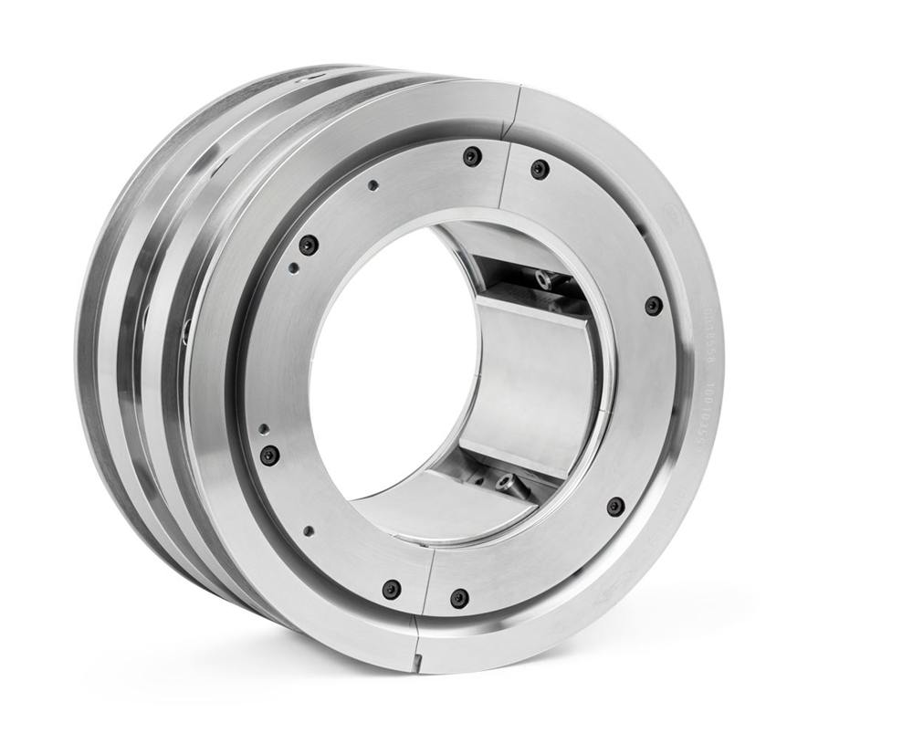

Là où la puissance doit passer, sans interruption
Énergie, pétrole et gaz, marine, industrie lourde : des transmissions de forte puissance qui exigent une maintenance experte.
Nos clients
Énergie
Réducteurs turbine – alternateur, pompes d’alimentation, ventilateurs.
- Visites préventives pendant les arrêts de tranche
- Expertise vibratoire des paliers
- Remplacement de coussinets et de dentures
Pétrole et gaz
Multiplicateurs haute vitesse de compresseurs, réducteurs de pompes, sur terre et offshore.
- Inspections majeures et reconstruction
- Interventions sur plateformes
- Pièces de rechange stratégiques
Marine
Réducteurs de propulsion et de lignes d’arbres pour navires (Allen Gears).
- Inspections pendant les arrêts techniques
- Relevés de jeux et alignements
- Révision des réducteurs
Industrie
Cimenterie, papeterie, sucrerie, sidérurgie, bancs d’essais.
- Réducteurs de broyeurs, d’enrouleuses, de laminoirs
- Remplacement de roulements et de joints
- Montage et alignement de bancs d’essais
Les transmissions que nous entretenons
Arbres parallèles
Réducteurs et multiplicateurs à un ou plusieurs étages, dentures hélicoïdales ou double hélicoïdales.
Haute vitesse
Multiplicateurs de compresseurs et de turbines, paliers lisses, vitesses élevées.
Épicycloïdaux
Réducteurs compacts de forte puissance pour pompes et entraînements industriels.
Marins
Réducteurs de propulsion, simples ou doubles entrées, avec butée intégrée.

L’historique de chaque machine, à portée de main
Chaque réducteur suivi a sa fiche : constructeur, modèle, n° de série et de commande d’origine, puissance, vitesses, et l’historique complet des interventions avec la synthèse de chaque rapport.